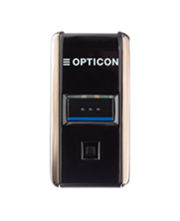

opticonnect sdk
OptiConnect SDK enables seamless integration with Opticon's BLE OPN-2500 and OPN-6000 barcode scanners. This SDK allows you to manage Bluetooth Low Energy (BLE) connections, handle scanner data streams, and programmatically control scanner settings via commands.
Features
Bluetooth discovery and connection management for OPN-2500 and OPN-6000 BLE scanners.
Real-time data streaming, including barcode data reception and BLE device state monitoring.
Programmatic control of scanner settings (e.g., scan modes, illumination, connection pooling, etc.).
Exclusive connection management: Ensure stable device pairing in multi-device environments by assigning unique connection pool IDs, preventing previously paired devices from hijacking active connections.
Command management and customization for BLE services and scanner configurations.
Getting Started
1. Prerequisites
At least one of the following Opticon BLE barcode scanners is required:
|

|

2. System Requirements
Android Minimum SDK: 26
Java Version: 11 or higher
Kotlin Version: 1.8.20 or higher
Gradle Version: 7.4 or higher
AGP (Android Gradle Plugin): 7.2.2 or higher
3. Building the opticonnect .aar library (optional)
To build the .aar file for the OptiConnect SDK with shadowed dependencies, follow these steps:
Run the shadowJar task:
./gradlew shadowJarPackage the final
.aar:./gradlew bundleShadowedReleaseAar
The generated .aar file will be located in build/outputs/aar/.
4. Adding the .aar library to your project
The .aar file (opticonnectsdk.aar) is provided at the following location. The library is already included in both the Kotlin and Java examples in their libs directories. To integrate the library into your own project, perform the following steps:
Copy
opticonnectsdk.aarto your project’s libs directory if it’s not already there.Add the .aar file to your dependencies in build.gradle(.kts) as explained in the following section.
5. Updating your build.gradle(.kts)
Add the .aar file and required dependencies to your build.gradle(.kts) file under dependencies. Below is the recommended setup:
Shared Dependencies for Java and Kotlin Projects
dependencies {
// Include the .aar file
implementation(files("libs/opticonnectsdk.aar"))
// Core Android dependencies
implementation(libs.androidx.core.ktx)
implementation(libs.androidx.lifecycle.runtime.ktx)
// RxAndroidBLE and RxKotlin for BLE and reactive programming
implementation(libs.rxandroidble)
implementation(libs.rxkotlin)
}Additional Kotlin Dependencies
If using Kotlin, add the Coroutines libraries for asynchronous handling:
dependencies {
// Coroutines dependencies
implementation(libs.coroutines)
implementation(libs.coroutines.android)
implementation(libs.coroutines.rx3)
}Note: Java projects do not require Coroutines as they use callbacks instead of coroutines for asynchronous handling.
Important: Kotlin Plugin Requirement for Java Projects
The Kotlin plugin is necessary even for Java-based projects due to the Kotlin-based .aar library. This ensures compatibility with any Kotlin classes or extensions within the SDK.
6. Android Manifest Bluetooth Permissions
To enable Bluetooth discovery and connection on Android, add the following permissions to your AndroidManifest.xml file located at android/app/src/main/AndroidManifest.xml below the manifest entry:
<uses-feature android:name="android.hardware.bluetooth_le" android:required="false" />
<!-- New Bluetooth permissions for Android 12 or higher -->
<uses-permission android:name="android.permission.BLUETOOTH_SCAN"/>
<uses-permission android:name="android.permission.BLUETOOTH_CONNECT" />
<uses-permission android:name="android.permission.ACCESS_FINE_LOCATION" />
<!-- Legacy permissions for Android 11 or lower -->
<uses-permission android:name="android.permission.BLUETOOTH" android:maxSdkVersion="30" />
<uses-permission android:name="android.permission.BLUETOOTH_ADMIN" android:maxSdkVersion="30" />
<!-- Legacy permission for Android 9 or lower -->
<uses-permission android:name="android.permission.ACCESS_COARSE_LOCATION" android:maxSdkVersion="28" />Examples
These examples demonstrate how to integrate the OptiConnect SDK to discover devices, manage Bluetooth connections, retrieve barcode data, and monitor battery status for the OPN-2500 and OPN-6000 in both Kotlin and Java.
Main Components in the Example
DeviceState: A data class managing the state of the connected BLE scanner, including device ID, connection state, barcode data, battery percentage, and charging status.
MainActivity: The main activity for setting up the SDK, handling Bluetooth permissions, discovering devices, managing connection and disconnection events, and starting listeners for barcode data and battery updates.
User Interfaces
Kotlin (Compose):
ConnectionStatusScreendisplays the connection status, barcode data, battery level, and charging state in a simple Compose layout.Java (XML Layout):
activity_main.xmlprovides a similar UI using TextView components to display the connection status, barcode data, battery level, and charging state, along with a "Disconnect" button.
Kotlin Example
This example demonstrates how to integrate the OptiConnect SDK using Kotlin. It is available in examples/kotlin.
MainActivity.kt
package com.opticon.opticonnect_sdk_example
import android.Manifest
import android.content.pm.PackageManager
import android.os.Build
import android.os.Bundle
import android.util.Log
import android.widget.Toast
import androidx.activity.ComponentActivity
import androidx.activity.compose.setContent
import androidx.activity.result.contract.ActivityResultContracts
import androidx.compose.foundation.layout.*
import androidx.compose.material3.*
import androidx.compose.runtime.*
import androidx.compose.ui.Modifier
import androidx.compose.ui.unit.dp
import androidx.core.content.ContextCompat
import androidx.lifecycle.lifecycleScope
import com.opticon.opticonnect.sdk.api.OptiConnect
import com.opticon.opticonnect.sdk.api.enums.BleDeviceConnectionState
import com.opticon.opticonnect_sdk_example.ui.theme.Opticonnect_SDK_ExampleTheme
import kotlinx.coroutines.launch
// Holds device-specific connection and data state
data class DeviceState(
val connectedDeviceId: String = "",
val connectionState: BleDeviceConnectionState = BleDeviceConnectionState.DISCONNECTED,
val barcodeData: String? = null,
val batteryPercentage: Int? = null,
val isCharging: Boolean? = null
)
class MainActivity : ComponentActivity() {
private var deviceState by mutableStateOf(DeviceState())
override fun onCreate(savedInstanceState: Bundle?) {
super.onCreate(savedInstanceState)
setContent { MainScreen() }
checkBluetoothPermissions()
}
// Sets up the main UI screen
@Composable
private fun MainScreen() {
Opticonnect_SDK_ExampleTheme {
Surface(
modifier = Modifier.fillMaxSize(),
color = MaterialTheme.colorScheme.background
) {
ConnectionStatusScreen(deviceState) { disconnectDevice(it) }
}
}
}
// Checks for required Bluetooth permissions and requests them if not granted
private fun checkBluetoothPermissions() {
val permissions = if (Build.VERSION.SDK_INT >= Build.VERSION_CODES.S) {
listOf(Manifest.permission.BLUETOOTH_SCAN, Manifest.permission.BLUETOOTH_CONNECT)
} else listOf(Manifest.permission.ACCESS_FINE_LOCATION)
val toRequest = permissions.filter {
ContextCompat.checkSelfPermission(this, it) != PackageManager.PERMISSION_GRANTED
}
if (toRequest.isNotEmpty()) {
requestPermissionsLauncher.launch(toRequest.toTypedArray())
} else initializeOptiConnectAndStartDiscovery()
}
// Launcher for permission requests
private val requestPermissionsLauncher = registerForActivityResult(
ActivityResultContracts.RequestMultiplePermissions()
) { permissions ->
if (permissions.all { it.value }) initializeOptiConnectAndStartDiscovery()
else Toast.makeText(this, "Bluetooth permissions are required.", Toast.LENGTH_LONG).show()
}
// Initializes OptiConnect SDK and starts device discovery
private fun initializeOptiConnectAndStartDiscovery() {
OptiConnect.initialize(this).apply {
OptiConnect.bluetoothManager.startDiscovery()
lifecycleScope.launch {
// Collects discovered devices and connects if disconnected
OptiConnect.bluetoothManager.listenToDiscoveredDevices.collect { device ->
if (deviceState.connectionState == BleDeviceConnectionState.DISCONNECTED) {
deviceState = deviceState.copy(
connectedDeviceId = device.deviceId,
connectionState = BleDeviceConnectionState.CONNECTING
)
connectToDevice(device.deviceId)
}
}
}
}
}
// Connects to the discovered device
private fun connectToDevice(deviceId: String) {
lifecycleScope.launch {
OptiConnect.bluetoothManager.apply {
try {
// Initiates the connection and listens to connection state
connect(deviceId)
startListeningToDeviceData(deviceId)
listenToConnectionState(deviceId).collect { state ->
deviceState = deviceState.copy(
connectionState = state,
connectedDeviceId = if (state == BleDeviceConnectionState.CONNECTED) deviceId else ""
)
Log.d("OptiConnect", "Device $deviceId state changed to: $state")
if (state == BleDeviceConnectionState.DISCONNECTED) {
deviceState = DeviceState() // Reset state on disconnect
}
}
} catch (e: Exception) {
// Handle connection failure and reset device state
Toast.makeText(this@MainActivity, "Failed to connect: ${e.message}", Toast.LENGTH_SHORT).show()
deviceState = DeviceState()
}
}
}
}
// Listens to data from the connected device (barcode, battery, charging status)
private fun startListeningToDeviceData(deviceId: String) {
lifecycleScope.launch {
OptiConnect.bluetoothManager.listenToBarcodeData(deviceId).collect { barcode ->
deviceState = deviceState.copy(barcodeData = barcode.data)
}
}
lifecycleScope.launch {
OptiConnect.bluetoothManager.listenToBatteryPercentage(deviceId).collect { battery ->
deviceState = deviceState.copy(batteryPercentage = battery)
}
}
lifecycleScope.launch {
OptiConnect.bluetoothManager.listenToBatteryStatus(deviceId).collect { status ->
deviceState = deviceState.copy(isCharging = status.isCharging)
}
}
}
// Disconnects from the device and resets the state
private fun disconnectDevice(deviceId: String) {
lifecycleScope.launch {
OptiConnect.bluetoothManager.disconnect(deviceId)
deviceState = DeviceState()
}
}
override fun onDestroy() {
super.onDestroy()
OptiConnect.close()
}
}
// UI for showing the connection status and device data
@Composable
fun ConnectionStatusScreen(
connectionState: DeviceState,
onDisconnect: (String) -> Unit
) {
Surface(
modifier = Modifier.fillMaxSize(),
color = MaterialTheme.colorScheme.background
) {
Column(
modifier = Modifier
.padding(16.dp)
.fillMaxSize()
) {
when (connectionState.connectionState) {
BleDeviceConnectionState.CONNECTING -> {
Text(
text = "Connecting to device...",
style = MaterialTheme.typography.headlineMedium
)
CircularProgressIndicator(
modifier = Modifier.padding(top = 16.dp)
)
}
BleDeviceConnectionState.CONNECTED -> {
Text(
text = "Connected to device: ${connectionState.connectedDeviceId}",
style = MaterialTheme.typography.headlineMedium
)
Text(
text = "Barcode Data: ${connectionState.barcodeData ?: "No barcode scanned yet."}"
)
Text(
text = "Battery: ${connectionState.batteryPercentage ?: "N/A"}%"
)
Text(
text = "Charging: ${if (connectionState.isCharging == true) "Yes" else "No"}"
)
Button(
onClick = { onDisconnect(connectionState.connectedDeviceId) },
modifier = Modifier.padding(top = 16.dp)
) {
Text("Disconnect")
}
}
BleDeviceConnectionState.DISCONNECTED -> {
Text(
text = "Searching for devices...",
style = MaterialTheme.typography.headlineMedium
)
}
BleDeviceConnectionState.DISCONNECTING -> {
Text(
text = "Disconnecting from device...",
style = MaterialTheme.typography.headlineMedium
)
}
}
}
}
}Java Example
This example demonstrates how to integrate the OptiConnect SDK using Java. It is available in examples/java.
DeviceState.java
package com.example.opticonnect_sdk_example_java;
import com.opticon.opticonnect.sdk.api.enums.BleDeviceConnectionState;
public class DeviceState {
// The ID of the currently connected BLE device, initially set to an empty string
private String connectedDeviceId = "";
// The current connection state of the BLE device, initially set to DISCONNECTED
private BleDeviceConnectionState connectionState = BleDeviceConnectionState.DISCONNECTED;
// Holds the most recent barcode data received from the connected device
private String barcodeData = null;
// Stores the current battery percentage of the connected device, if available
private Integer batteryPercentage = null;
// Indicates whether the connected device is currently charging, if available
private Boolean isCharging = null;
// Getter and setter for the connected device ID
public String getConnectedDeviceId() { return connectedDeviceId; }
public void setConnectedDeviceId(String id) { this.connectedDeviceId = id; }
// Getter and setter for the device connection state
public BleDeviceConnectionState getConnectionState() { return connectionState; }
public void setConnectionState(BleDeviceConnectionState state) { this.connectionState = state; }
// Getter and setter for barcode data
public String getBarcodeData() { return barcodeData; }
public void setBarcodeData(String data) { this.barcodeData = data; }
// Getter and setter for battery percentage
public Integer getBatteryPercentage() { return batteryPercentage; }
public void setBatteryPercentage(Integer percentage) { this.batteryPercentage = percentage; }
// Getter and setter for the charging status
public Boolean getIsCharging() { return isCharging; }
public void setIsCharging(Boolean isCharging) { this.isCharging = isCharging; }
}MainActivity.java
package com.example.opticonnect_sdk_example_java;
import android.Manifest;
import android.content.pm.PackageManager;
import android.os.Build;
import android.os.Bundle;
import android.util.Log;
import android.widget.Button;
import android.widget.TextView;
import android.widget.Toast;
import androidx.activity.ComponentActivity;
import androidx.activity.result.ActivityResultLauncher;
import androidx.activity.result.contract.ActivityResultContracts;
import androidx.annotation.NonNull;
import androidx.core.content.ContextCompat;
import com.opticon.opticonnect.sdk.api.OptiConnect;
import com.opticon.opticonnect.sdk.api.entities.BarcodeData;
import com.opticon.opticonnect.sdk.api.entities.BatteryLevelStatus;
import com.opticon.opticonnect.sdk.api.entities.BleDiscoveredDevice;
import com.opticon.opticonnect.sdk.api.enums.BleDeviceConnectionState;
import com.opticon.opticonnect.sdk.api.interfaces.Callback;
import kotlin.Unit;
public class MainActivity extends ComponentActivity {
// Device state to hold the connection, battery, and barcode data information
private DeviceState deviceState = new DeviceState();
// UI components to display device status, battery, barcode, and charging info
private TextView connectionStatusText, barcodeDataText, batteryPercentageText, chargingStatusText;
// Launcher to request Bluetooth permissions as needed
private final ActivityResultLauncher<String[]> requestPermissionsLauncher =
registerForActivityResult(new ActivityResultContracts.RequestMultiplePermissions(), this::onPermissionsResult);
@Override
protected void onCreate(Bundle savedInstanceState) {
super.onCreate(savedInstanceState);
setContentView(R.layout.activity_main);
// Bind UI elements
connectionStatusText = findViewById(R.id.connectionStatusText);
barcodeDataText = findViewById(R.id.barcodeDataText);
batteryPercentageText = findViewById(R.id.batteryPercentageText);
chargingStatusText = findViewById(R.id.chargingStatusText);
Button disconnectButton = findViewById(R.id.disconnectButton);
// Handle disconnect button click
disconnectButton.setOnClickListener(view -> disconnectDevice());
// Check Bluetooth permissions before initializing SDK
checkBluetoothPermissions();
}
/**
* Checks if Bluetooth permissions are granted and requests them if necessary.
* For Android 12+ (API level 31), BLUETOOTH_SCAN and BLUETOOTH_CONNECT are required.
* For older versions, ACCESS_FINE_LOCATION is sufficient.
*/
private void checkBluetoothPermissions() {
String[] permissions = Build.VERSION.SDK_INT >= Build.VERSION_CODES.S
? new String[]{Manifest.permission.BLUETOOTH_SCAN, Manifest.permission.BLUETOOTH_CONNECT}
: new String[]{Manifest.permission.ACCESS_FINE_LOCATION};
boolean permissionsGranted = true;
for (String permission : permissions) {
permissionsGranted &= ContextCompat.checkSelfPermission(this, permission) == PackageManager.PERMISSION_GRANTED;
}
if (permissionsGranted) {
initializeOptiConnectAndStartDiscovery();
} else {
// Launch permission request if not all permissions are granted
requestPermissionsLauncher.launch(permissions);
}
}
/**
* Callback for the result of the permission request.
* Initializes SDK and starts Bluetooth discovery if permissions are granted.
*/
private void onPermissionsResult(@NonNull java.util.Map<String, Boolean> permissions) {
if (permissions.containsValue(Boolean.FALSE)) {
Toast.makeText(this, "Bluetooth permissions are required.", Toast.LENGTH_LONG).show();
} else {
initializeOptiConnectAndStartDiscovery();
}
}
/**
* Initializes the OptiConnect SDK and starts device discovery.
* Sets up a listener for discovered devices to initiate connection upon detection.
*/
private void initializeOptiConnectAndStartDiscovery() {
// Initialize SDK
OptiConnect.INSTANCE.initialize(this);
// Start device discovery
OptiConnect.INSTANCE.getBluetoothManager().startDiscovery();
// Listen for discovered devices
OptiConnect.INSTANCE.getBluetoothManager().listenToDiscoveredDevices(new Callback<>() {
@Override
public void onSuccess(BleDiscoveredDevice device) {
if (deviceState.getConnectionState() == BleDeviceConnectionState.DISCONNECTED) {
deviceState.setConnectedDeviceId(device.getDeviceId());
deviceState.setConnectionState(BleDeviceConnectionState.CONNECTING);
updateUI();
connectToDevice(device.getDeviceId());
}
}
@Override
public void onError(@NonNull Throwable error) {
Log.e("OptiConnect", "Error discovering devices: " + error.getMessage());
}
});
}
/**
* Initiates connection to a BLE device by device ID and sets up data listeners.
*/
private void connectToDevice(String deviceId) {
OptiConnect.INSTANCE.getBluetoothManager().connect(deviceId, new Callback<>() {
@Override
public void onSuccess(Unit result) {
deviceState.setConnectionState(BleDeviceConnectionState.CONNECTED);
updateUI();
startListeningToDeviceData(deviceId);
listenToConnectionState(deviceId);
}
@Override
public void onError(@NonNull Throwable error) {
Toast.makeText(MainActivity.this, "Failed to connect: " + error.getMessage(), Toast.LENGTH_SHORT).show();
deviceState = new DeviceState();
}
});
}
/**
* Starts listening to device data streams (barcode, battery, and charging status).
*/
private void startListeningToDeviceData(String deviceId) {
OptiConnect.INSTANCE.getBluetoothManager().listenToBarcodeData(deviceId, new Callback<>() {
@Override
public void onSuccess(BarcodeData barcode) {
deviceState.setBarcodeData(barcode.getData());
updateUI();
}
@Override
public void onError(@NonNull Throwable error) {
Log.e("OptiConnect", "Error receiving barcode data: " + error.getMessage());
}
});
OptiConnect.INSTANCE.getBluetoothManager().listenToBatteryPercentage(deviceId, new Callback<>() {
@Override
public void onSuccess(Integer batteryPercentage) {
deviceState.setBatteryPercentage(batteryPercentage);
updateUI();
}
@Override
public void onError(@NonNull Throwable error) {
Log.e("OptiConnect", "Error receiving battery percentage: " + error.getMessage());
}
});
OptiConnect.INSTANCE.getBluetoothManager().listenToBatteryStatus(deviceId, new Callback<>() {
@Override
public void onSuccess(BatteryLevelStatus status) {
deviceState.setIsCharging(status.isCharging());
updateUI();
}
@Override
public void onError(@NonNull Throwable error) {
Log.e("OptiConnect", "Error receiving battery status: " + error.getMessage());
}
});
}
/**
* Listens to the device's connection state and updates the UI accordingly.
*/
private void listenToConnectionState(String deviceId) {
OptiConnect.INSTANCE.getBluetoothManager().listenToConnectionState(deviceId, new Callback<>() {
@Override
public void onSuccess(BleDeviceConnectionState state) {
deviceState.setConnectionState(state);
updateUI();
}
@Override
public void onError(@NonNull Throwable error) {
Log.e("OptiConnect", "Error receiving connection state: " + error.getMessage());
}
});
}
/**
* Disconnects the device and resets the device state.
*/
private void disconnectDevice() {
// Reset DeviceState and update UI
deviceState = new DeviceState();
updateUI();
}
/**
* Updates the UI based on the current device state, including connection status, battery, and barcode data.
*/
private void updateUI() {
connectionStatusText.setText("Status: " + deviceState.getConnectionState().name());
// Set color based on connection state
switch (deviceState.getConnectionState()) {
case CONNECTING:
connectionStatusText.setTextColor(ContextCompat.getColor(this, R.color.connecting_color));
break;
case CONNECTED:
connectionStatusText.setTextColor(ContextCompat.getColor(this, R.color.connected_color));
break;
case DISCONNECTED:
connectionStatusText.setTextColor(ContextCompat.getColor(this, R.color.disconnected_color));
break;
default:
connectionStatusText.setTextColor(ContextCompat.getColor(this, R.color.text_primary));
}
// Display barcode, battery percentage, and charging status
barcodeDataText.setText("Barcode Data: " + (deviceState.getBarcodeData() != null ? deviceState.getBarcodeData() : "None"));
batteryPercentageText.setText("Battery: " + (deviceState.getBatteryPercentage() != null ? deviceState.getBatteryPercentage() + "%" : "N/A"));
chargingStatusText.setText("Charging: " + (deviceState.getIsCharging() != null ? (deviceState.getIsCharging() ? "Yes" : "No") : "Unknown"));
}
}res/values/colors.xml
<?xml version="1.0" encoding="utf-8"?>
<resources>
<color name="background_color">#FFFFFF</color> <!-- White background -->
<color name="text_primary">#000000</color> <!-- Black primary text -->
<color name="text_secondary">#666666</color> <!-- Gray secondary text -->
<color name="button_color">#6200EE</color> <!-- Purple button color -->
<color name="connecting_color">#FFA500</color> <!-- Orange for "Connecting" -->
<color name="connected_color">#00FF00</color> <!-- Green for "Connected" -->
<color name="disconnected_color">#FF0000</color> <!-- Red for "Disconnected" -->
</resources>res/layout/activity_main.xml
<!-- res/layout/activity_main.xml -->
<LinearLayout
xmlns:android="http://schemas.android.com/apk/res/android"
android:orientation="vertical"
android:layout_width="match_parent"
android:layout_height="match_parent"
android:background="@color/background_color"
android:padding="16dp">
<TextView
android:id="@+id/connectionStatusText"
android:layout_width="wrap_content"
android:layout_height="wrap_content"
android:text="Status: Disconnected"
android:textColor="@color/disconnected_color"
android:textSize="18sp"/>
<TextView
android:id="@+id/barcodeDataText"
android:layout_width="wrap_content"
android:layout_height="wrap_content"
android:text="Barcode Data: None"
android:textColor="@color/text_primary"
android:textSize="16sp"/>
<TextView
android:id="@+id/batteryPercentageText"
android:layout_width="wrap_content"
android:layout_height="wrap_content"
android:text="Battery: N/A"
android:textColor="@color/text_secondary"
android:textSize="16sp"/>
<TextView
android:id="@+id/chargingStatusText"
android:layout_width="wrap_content"
android:layout_height="wrap_content"
android:text="Charging: Unknown"
android:textColor="@color/text_secondary"
android:textSize="16sp"/>
<Button
android:id="@+id/disconnectButton"
android:layout_width="wrap_content"
android:layout_height="wrap_content"
android:text="Disconnect"
android:textColor="@android:color/white"
android:backgroundTint="@color/button_color"
android:layout_marginTop="16dp"/>
</LinearLayout>